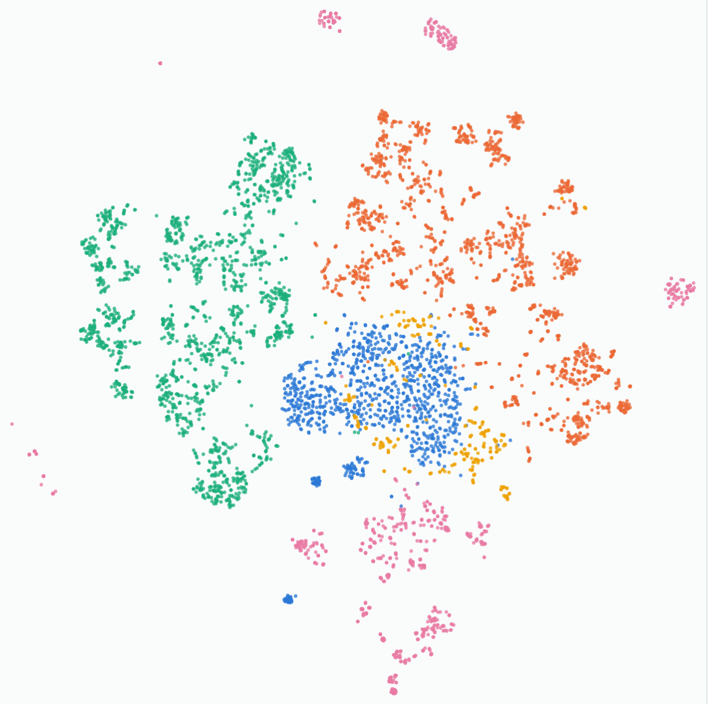
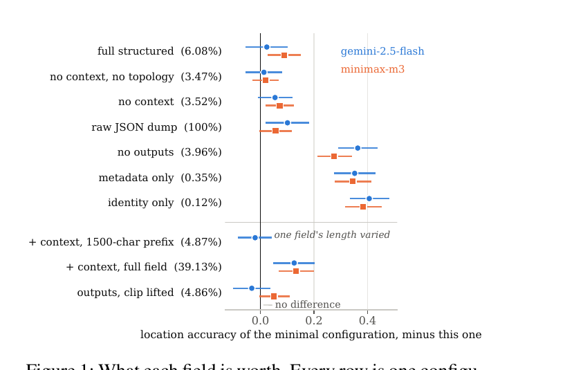
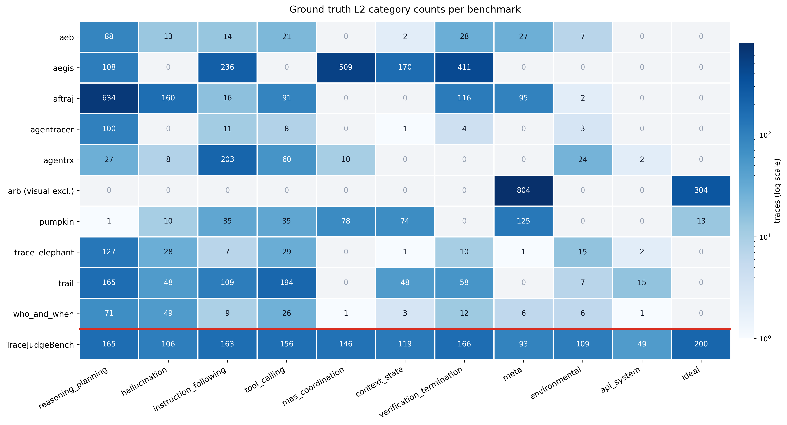

Researcher, ITMO University AI Center. Saint Petersburg.
barakhsin@gmail.com · Google Scholar · GitHub · LinkedIn
Agent oversight assumes that when a system fails, the record it left is enough to tell you so. I measure whether that holds.
Mostly it does not. Established LLM judges report a failure on clean agent traces between 34% and 78% of the time. And 84% of a trace by volume, the part holding prompts and retrieved documents, contributes nothing at all to locating a failure.
A quantitative survey of agent-safety trace corpora, and a judge benchmark built on it. Ten corpora and roughly 24,000 labelled traces, assembled from an exhaustive search of the released literature, with every source's label semantics verified rather than inferred. Results and taxonomy under submission.

What an execution trace has to retain for failure attribution, measured rather than assumed. Holding a benchmark's taxonomy, judge prompt and scoring code fixed, I varied only which trace fields the judge received.

877 agent execution traces unified from ten judge-validation datasets under a single two-level taxonomy, with native trace representations preserved.

A MetaAgent synthesises an evaluation pipeline per trace instead of reusing one fixed judge, with full-trace and summary modes for long inputs.
Two-level evaluation methodology, agent and system. F1 0.85 on out-of-distribution TRAIL.
A Python library for automated evaluation of multi-agent systems, built on Pydantic AI. My contributions are judge and verifier implementation, including a no-ground-truth task-completion verifier, plus ablation tooling and reporting over the Who&When corpus.
The reference implementation of the trace-adaptive judge above, in Python on Pydantic AI, OpenRouter and MCP. My contributions are the judge-synthesis pipeline and the DB-backed retrieval path that lets summary-mode judging reach back into the original trace step by step, rather than judging the summary alone.
Modified YOLOv8 tracking for counting stray dog populations from municipal camera streams, built for my BSc thesis. The problem is not detection but counting without double-counting, so the pipeline pairs a YOLOv8 detector with OC-SORT tracking and holds identity across a live stream, with per-camera state so counts attribute to a location. Camera endpoints are third-party infrastructure and are not included.
I came into research from industry rather than through a PhD. Before ITMO I was an AI product manager at a regional bank, where I led the team that shipped computer-vision monitoring on municipal cameras to 92% accuracy against an 85% requirement, and before that the founding ML engineer on an environmental monitoring system I finished alone after the rest of the team left. That is where the interest in this problem comes from: a monitor nobody can act on is not a monitor.